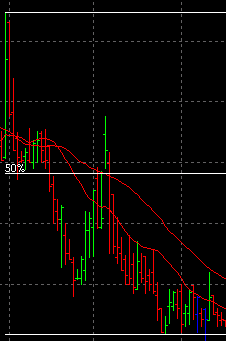
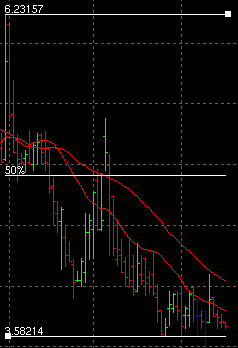
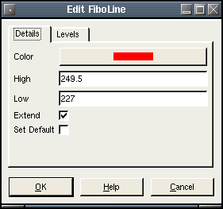
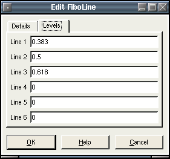

FiboLine
Description:
A group of horizontal line(s) used to indicate fibonacci retracement levels.
To create a FiboLine, select draw mode from the main toolbar and right click with the mouse on the chart you wish to apply it to. This can be either the main chart area or any of the indicators that appear in the indicator chart area. Select "New Chart Object" from the popup menu and select FiboLine from the menu.
After selecting the menu option, the mouse
pointer will change
to a hand pointer. The user must select the high and low points of the
Fibonacci retracement levels. The high point is requested first,
and is selected by clicking the left mouse button on the chart. Once
the high point is selected, the retracement levels will appear
and folow the mouse pointer and update dynamically. The the low point
is selected the same as the high point.
Selecting:
In order to edit the FiboLine, the user must first select it. First, the user must be in draw mode. Select the FiboLine by left clicking with the mouse anywhere on either the top or bottom line. The object will be selected when the 2 "grab boxes" appear on the top right and bottom left corners lines like this:
You then can right click the mouse for a context menu for the object. You may also double-left click on the object to bring up the edit dialog directly. There are three options when a FiboLine is selected. Edit, Move and Delete.
Edit:
The FiboLine parms are defined as follows:
- Color - The color of the line.
- High - The high point of the retracement range.
- Low - The low point of the retracement range.
- Extend - Extend lines to end of the chart.
- Set Default - If checked, all settings will default to the current values when new ones are created.
- Line 1 to Line 6 - User defined retracement levels. eg. 1.0 =
100%, 0.5 = 50%. Set to zero if no line is wanted.
 